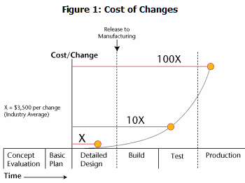
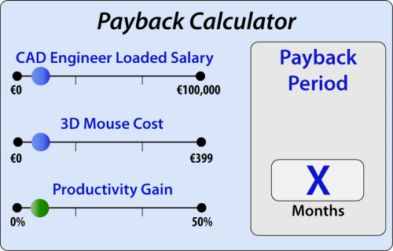
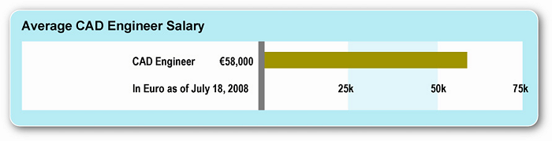
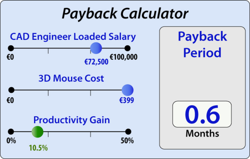

|
4. 3D Farelerin Ekonomik Geri Dönüþümü
Daha kaliteli urun, az zarar ve pazara daha hýzlý ulaþýmýn etkilerini tam olarak hesaplamak zordur. Ancak buradaki araþtýrma sonuçlarýna göre, dizayn mühendislerinin kazandýðý verimlilik hesaplanabilir.
Bu önemli durumla birlikte, urun kalitesi, az zarar ve pazara hýzlý ulaþýmýn, daha üretken CAD dizayn mühendislerinden daha fazla maliyete neden olduðunu hatýrlamak gerekir.
Gavin Finn'in Quality Digest'ta yazdýðý gibi:
Gerçek masraflar dizayn kalitesindeki ihmalle alakalýdýr. Eðer dizayn bilgilerindeki görevler ve hatalar erken belirlenmezse daha sonra urun geliþiminde daha masraflý deðiþiklikler gerekir. Bu Finn'in "erken keþif" diagramýnda belirtilmiþtir:

Böylece dizayn mühendislerinden ekonomik geri dönüþüm ispatlanmýþ olur.
CAD dizayn mühendisleri için 3D Mouse'larýnýn yatýrýmýný yapan ROI'yi devam ettirecek olan 3 ana faktör:
- 3D mouse'larýn fiyatý
- CAD dizayn mühendislerinin maaþý
- 3D mouse'larý sayesinde kazanýlan verimlilik
Firmalar bu tur yatýrýmlar için iki yaygýn metot kullanýrlar: Geri dönüþüm periyodu ve yýllýk ROI. Bundan baþka metotlar (NPV, IRR, vb) bu raporda tartisilmayacak ancak kolayca tahmin edilebilir.
4.1. Geri ödeme Periyodu ve ROI
Geri ödeme periyodu, yapýlan yatýrýmýn ne kadar hýzlý geri döneceðini belirler. Hesaplama su þekildedir:
Yýllar içinde Geri ödeme periyodu= 3D mouse fiyatý/ (yýllýk mühendis maaþý*kazanýlan verimlilik)
Yapýlan denklemde görüldüðü gibi "geri ödeme hesaplayýcýsý" ile hesaplama yapýlabilir, bunun için kullanýcýnýn 3 þeyi bilmesi gerekir :
- Dizayn Mühendisinin maaþý
- 3D fare fiyatý
- Kazanýlan verimlilik
Geri dönüþüm hesaplayýcýsý iþlemi yapar ve geri ödeme periyodunu belirler.

ROI hesaplamasý bir yatýrýmýn devam eden geri ödemesini ölçer- çoðunlukla daha geniþ kapsamlý finansal ölçüm olarak, yýllýk bazda .
yýllýk ROI(yatýrýmýn geri dönüþü) = (CAD kullanýcýsýnýn yýllýk toplam maaþý * Üretkenlik Artýþý) - (3D Fare Fiyatý) / (3D Fare Fiyatý)
Þu iki deðiþken çok basit: 3D fare fiyatý ve CAD tasarýmcýsýnýn yýllýk toplam maaþý. Kritik deðiþken -üretkenlik artýþý- ise 3D fare kullanýcýlarý araþtýrmasýndan elde edilmiþtir.
Bunlar, beklenen 3D tasarýmcýlarý için 3D fare yatýrýmýnýn ekonomik geri dönüþümün belirlenmesindeki girdileri oluþturur.
4.2 3D Fare Fiyatlarý
3Dconnexion'un profesyonel 3D fareleri 99 Euro ile 399 Euro arasýnda deðiþmekte. Bir çok þirket daha zengin donanýmlarýndan dolayý SpaceExplorer(299 Euro) ya da SpacePilot (299 Euro) gibi üst düzey ürünleri seçmekte. Bu analizin amaçlarý açýsýndan, 299 Euro deðerindeki SpacePilot ürününü kullanacaðýz.
4.3 3D CAD Tasarýmcýlarýnýn Maaþlarý ve Toplam Masraflarý
Bir çok web sitesi, çeþitli meslek gruplarýnýn maaþlarýný yayýnlamakta. Bu örnek için, bir CAD tasarým mühendisinin yýllýk maaþýný, 2008 yýlý için 58.000 Euro olarak kabul ediyoruz.

Bu rakam, tabi ki lokasyon, deneyim ve endüstri gibi bir çok etkene dayalý olarak farklýlýk göstermekte. Genel olarak, 3D CAD tasarým mühendisleri 2D tasarým mühendislerinden daha çok kazanmaktadýr.
Çalýþan çýkarlarý (izin, saðlýk sigortasý vb), temel maaþýn %25'i olarak tahmin edildi, bu da çalýþanýn haklarýyla beraber bir CAD tasarým mühendisinin toplam yýllýk maaþýnýn 72.000 Euro civarýnda bir rakam göstermekte.
Tüm masraflar (alan, ekipman vb.) daha baþka masraflar ekler. Kesin bilginin yokluðunda, bu etmenler göz ardý edilecek.
4.4 3D Farenin Üretkenlik Artýþý
3D fare kullanýmýyla gerçekleþen üretkenlik artýþý, araþtýrmadaki ortalama rakam alýnarak alýndý ve 3D CAD tasarým mühendislerinin 3D uygulamalarýný kullanarak geçirdiði ortalama gün sayýsý ile çarpýldý.
Rapor edilen ortalama üretkenlik artýþý, bu araþtýrmadaki 190 tasarýmcý ile belirlenen, %21'dir. 3D CAD tasarým mühendislerinin uygulamalarýný kullanarak geçirdiði ortalama zaman ise, 5 saat. Ya da baþka bir tahmin ile, günlerinin yarýsý.
Bu iki rakamýn çarpýlmasý ile, ortalama üretkenlik artýþýnýn %10.5 olduðunu söyleyebiliriz. Þimdi, daha önceki geri ödeme süresi formülü ile:
Yýllar içinde geri ödeme süresi = 3D fare fiyatý / ( Yýllýk CAD tasarým mühendisi maaþý * üretkenlik artýþý)
Böylece:
399 Euro / (72.000 Euro * 10.5) = 0.052 yýl (19 gün)
Bu da, 3D fareye yapýlan yatýrýmýn bir aydan daha kýsa zamanda geri döneceði anlamýna gelir.
3 geri dönüþüm hesaplayýcýsý bu verilere uygularsak, sonucun 19 gün (=0,6 ay) olduðunu görürüz.

5. Sonuçlar
Bu raporun amacý, 3D farelerin 3D CAD tasarým mühendislerinin üretkenliðini fark edilir derecede artýrdýðý iddialarýný ölçmektir. Bir baþka arayýþ ise, etkileyici üretkenlik artýþý yarattýðý iddiasýný güden kullanýcý arayüzünü test etmektir.
190 3D fare kullanýcýsý ile gerçekleþtirilen araþtýrma, 3D fare kullanan CAD tasarým mühendislerinin %20'den fazla üretkenlik artýþýný tecrübe ettikleri yönündedir. Bu kullanýcýlar, 6DoF navigasyonun ve ayný anda çift elle çalýþmanýn üretim artýþlarýnda en önemli noktalar olduðunu belirtmektedirler.
Kýsacasý, 3D farelere yapýlan yatýrýmýn alýþmadýk derecede hýzlý geri döndüðü -bir aydan daha kýsa bir süre- , ve bu sonuçlarýn ýþýðýnda þirketlerin CAD tasarým mühendislerini 3D farelere adapte etmeleri ve bu þekilde çalýþmalarýný saðlamalarý kesinlikle tavsiye edilir.
6. Kaynaklar:
- Bederson, B.B. (2002) Interfaces for Staying in the Flow, Human-Computer Interaction Lab, University of Maryland.
- Buxton, W., Billinghurst, M., Guiard, Y., Sellen, A., and Zhai, S. (2002). Human Input to Computer Systems: Theories, Techniques and Technology.
- Buxton, W. (1986) There's more to interaction than meets the eye: some issues in manual input. User Centered System Design, Lawrence Erlbaum Associates, Norman, D.A. and Draper, S.W. (Eds.), 3 19-337.
- Buxton, W. and Myers, B. (1986) A study of twohanded input. Proceedings of CHI 86: ACM Conference on Human Factors in Computing Systems, 321-326.
- Callahan, J., Hopkins, D., Wiser, M., and Shneiderman, B. (1988) An Empirical Comparison of Pie vs. Linear Menus, Computer Science Department, University of Maryland.
- Fitts, P. (1954) The information capacity of the human motor system in controlling the amplitude of movement. Journal of Experimental Psychology, 46, 199-210.
- Guiard, Y. (1987) Asymmetric division of labor in human skilled bimanual action: The kinematic chain as a model. Journal of Motor Behavior, 19(4) 486-517.
- ISUR Project: Industry Usability Report (1999) NIST White Paper.
- Kabbash, P., Buxton, W., and Sellen, A. (1994) Twohanded input in a compound task. Proceedings of CHI 94: ACM Conference on Human Factors in Computing Systems, 417-423.
- Leganchuk, A., Zhai, S., and Buxton, W. (1996) Manual and cognitive factors in two-handed input: an experimental study. Submitted for publication.
- MacKenzie, I.S., Sellen, A., and Buxton, W. (1991) A comparison of input devices in elemental pointing and dragging tasks (1991). Proceedings of CHI 91: ACM Conference on Human Factors in Computing Systems, New Orleans, Louisiana, 161-166.
- Nielsen, J. (1994) Usability Engineering.
- Poulton, E.C. (1974) Tracking skill and manual control. New York, Academic Press.
- Rutledge. J. and Selker, T. (1990) Force-to-motion function for pointing. Proceedings of INTERACT '90: The IFIP Conference on Human Computer Interaction, 701-705.
- Salazar, P. and Marteau, J-M. (2004) Designing a 3D Input Device for Interventional Radiology GE Healthcare, Global Industrial Design Department.
- Smith, D.C., Irby, C., Kimball, R., Verplank, W., and Harslem, E. (1982) Designing the Star user interface. Byte, 7(4), 242-282.
- Venolia, D. (1993) Facile 3D direct manipulation. Proceedings of INTERCHI '93: ACM Conference on Human Factors in Computing Systems, Amsterdam, The Netherlands, 3 1-36.
- Zhai, S. (1995) Human Performance in Six Degree of Freedom Input Control, Ph.D. Thesis, University of Toronto.
- Zhai, S. and Milgram, P. (1993) Human performance in evaluation of manipulation schemes in virtual environments. Proceedings of VRAIS '93: IEEE Virtual Reality Annual International Symposium, Seattle, Washington, 155-161.
- Zhai, S., Milgram, P, and Drascic, D. (1993) An evaluation of four 6 degree-of-freedom input techniques. Adjunct Proceedings of INTERCHI '93: The IFIP Conference on Human-Computer Interaction, Amsterdam, The Netherlands, 155-161.
- Zhai, S., Smith, B., and Selker, T. (1997) Improving Browsing Performance: A Study of Four Input Devices for Scrolling and Pointing Tasks. Proceedings of INTERACT '97.
|